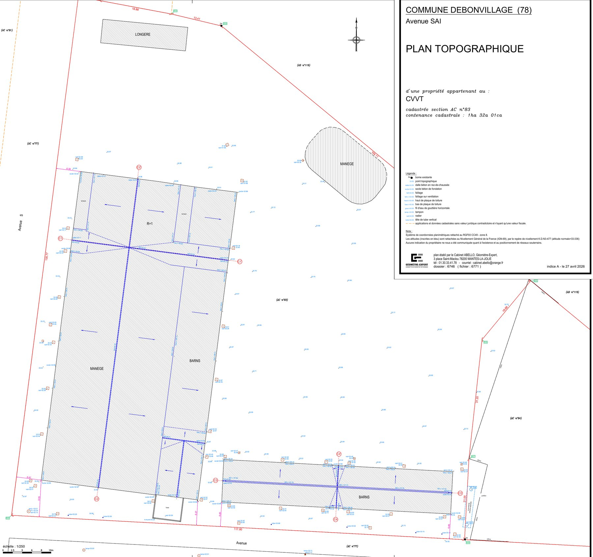
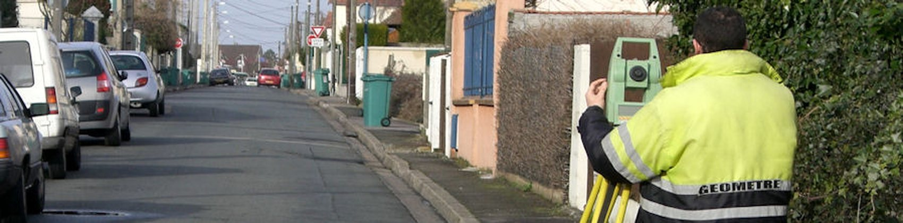
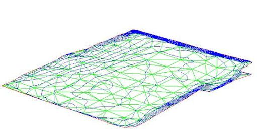
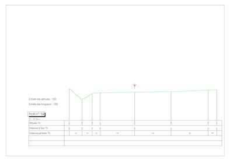
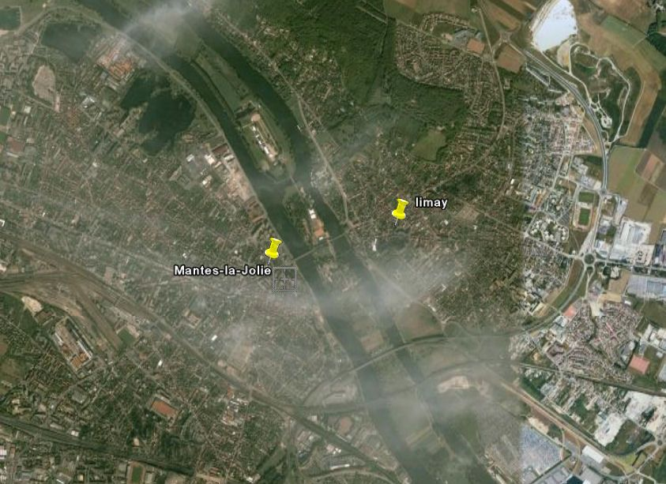
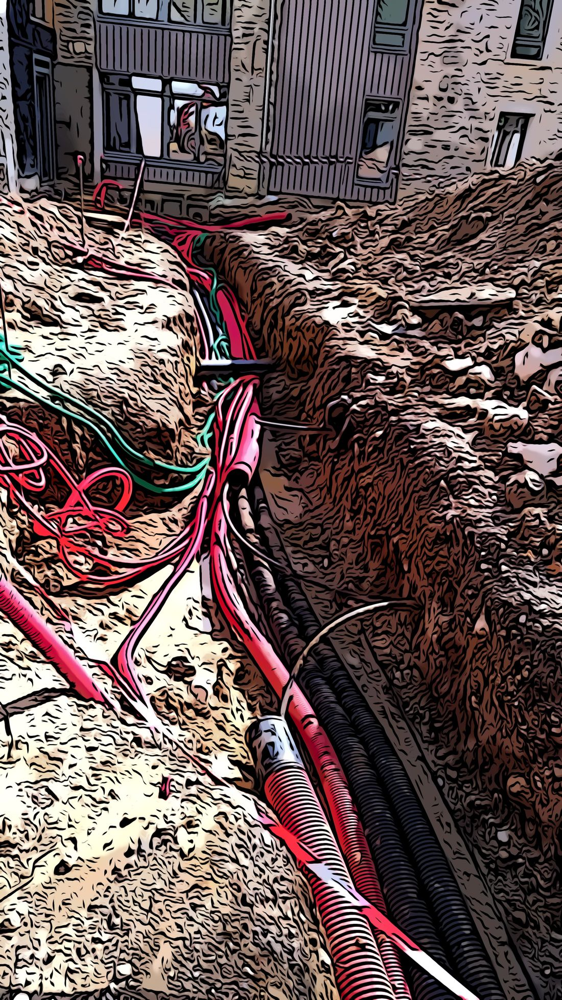
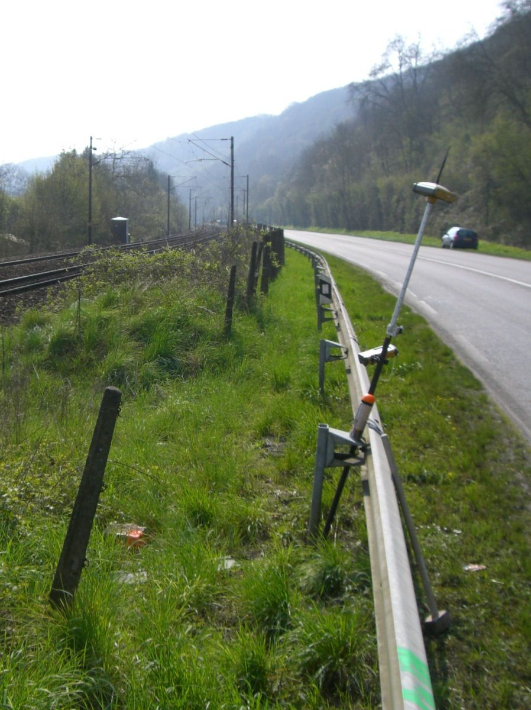

Le levé, point de départ de tout projet
Un plan topographique n'est pas un dessin : c'est une mesure. Chaque point relevé a des coordonnées et une altitude, et peut être retrouvé des années plus tard.
Nous relevons ce qui commande le projet : le terrain naturel et ses pentes, les bâtiments et leurs seuils, les clôtures et murs, la voirie, les bordures et les fils d'eau, les arbres, les ouvrages visibles — regards, tampons, poteaux, coffrets.
S'y ajoutent, quand le dossier l'exige, les limites de propriété issues des titres et de l'analyse foncière. C'est la différence entre un plan de géomètre-expert et un simple relevé : la limite y figure sous notre responsabilité, quand un simple relevé topographique se borne à représenter ce qui est visible sur le terrain.
Le plan est livré à l'échelle utile — le plus souvent au 1/200 ou au 1/500 — en DWG, DXF et PDF.
Un plan topographique

Le nivellement et l'altimétrie
Une altitude n'a de sens que rattachée à une référence. Sans cela, deux plans du même terrain ne se superposent pas.
Nous rattachons nos levés au NGF-IGN69, le nivellement général de la France, et nos coordonnées au RGF93, dans la projection conique conforme CC49 adaptée à l'Île-de-France. Ce ne sont pas de simples habitudes de métier : ce sont les systèmes légaux de référence, obligatoires pour les échanges publics de données géoréférencées, ce qui permet à votre plan de dialoguer avec le cadastre, avec les plans de réseaux et avec ceux des autres intervenants.
Le nivellement sert partout : pentes d'assainissement, seuils et accessibilité, niveaux de plancher fini, hauteurs réglementaires au plan local d'urbanisme, cotes de référence en zone inondable.
Nos cheminements de nivellement sont fermés et contrôlés : l'écart de fermeture est calculé et compensé. Un nivellement qui ne ferme pas n'est pas livré.
Le relevé de corps de rue
Une rue n'est pas seulement une chaussée : c'est un assemblage de bordures, de trottoirs, de stationnements, d'arbres, de mobilier, d'affleurants de réseaux et de façades. Le relevé de corps de rue les mesure tous, d'une façade à l'autre.
La chaussée : axe, largeurs, revêtements, marquages, îlots, ralentisseurs.
Les bordures et trottoirs : hauteur de bordure, fil d'eau, caniveaux, abaissements, bandes podotactiles.
Le mobilier : candélabres, poteaux, signalisation, corbeilles, bancs, abris, jardinières.
Les affleurants de réseaux : tampons, regards, grilles, bouches à clé, coffrets, chambres de tirage — chacun avec sa nature apparente.
La végétation : troncs, emprises de couronne, fosses de plantation.
Les façades et leurs seuils, qui donnent les niveaux de raccordement des riverains.
Sur un projet d'espace public, l'accessibilité se joue au centimètre : pentes de cheminement, dévers de trottoir, hauteurs de bordure aux traversées, paliers de repos. Toutes ces valeurs sont réglementées, et toutes se vérifient sur un relevé altimétrique dense — et non quelques points épars — rattaché au NGF-IGN69. C'est la pièce de base de toute étude d'aménagement : sans elle, le projet se dessine sur des hypothèses.

Ce que produit un levé



Le récolement des réseaux
Une tranchée ouverte ne le reste pas longtemps. Ce qui n'a pas été relevé avant remblaiement devient très difficile à retrouver — et se découvre souvent à la pelle mécanique, des années plus tard.
Le récolement consiste à relever les réseaux pendant qu'ils sont visibles : position en plan, profondeur, nature et diamètre des canalisations, regards et ouvrages annexes. Le plan qui en résulte accompagne l'ouvrage pendant toute sa vie.
C'est une pièce que réclament les gestionnaires de réseaux et les collectivités à la réception des travaux, et qui conditionne la sécurité des interventions futures.
Ce n'est pas seulement une bonne pratique : c'est un cadre réglementaire complet. Depuis la réforme dite « anti-endommagement » (loi n° 2010-788 du 12 juillet 2010, articles L.554-1 et suivants et R.554-1 et suivants du code de l'environnement), tous les exploitants enregistrent leurs réseaux au guichet unique national des réseaux et canalisations, et tout chantier commence par les déclarations préalables — DT du maître d'ouvrage, DICT de l'entreprise — auprès des exploitants concernés.
Et depuis le 1ᵉʳ janvier 2018, le récolement cartographique d'un réseau neuf ou modifié doit être confié à un prestataire certifié en géoréférencement — une qualité que le géomètre-expert détient de plein droit (voir la section suivante). Relever un réseau ne s'improvise pas : c'est un savoir-faire de mesure, de rattachement et de restitution, avec la précision de la classe A en ligne de mire.

Géoréférencer les réseaux : ce que dit la réglementation
Depuis la réforme anti-endommagement des réseaux, relever et géoréférencer une canalisation n'est plus un travail libre : il est encadré, et le géomètre-expert y occupe une place à part.
Les prestataires qui géoréférencent les réseaux doivent en principe être certifiés. Le géomètre-expert inscrit à l'Ordre en est dispensé : son inscription vaut satisfaction de cette obligation pour le géoréférencement des réseaux, sous réserve de respecter ses obligations de compétence et d'assurance (article 23 de l'arrêté du 15 février 2012 modifié). C'est la seule profession dans ce cas.
La détection des réseaux enterrés — les localiser sans ouvrir le sol — reste en revanche soumise à la certification spécifique, quelle que soit la profession.
Concrètement : pour le récolement de vos réseaux en tranchée ouverte et leur report sur plan géoréférencé, le géomètre-expert est un interlocuteur qualifié de plein droit — c'est ce que rappelle l'Ordre des géomètres-experts lui-même.
Sur le terrain
Deux techniques, choisies selon le site, et le plus souvent combinées.
La station totale mesure angles et distances depuis des stations connues. C'est la méthode de référence en milieu bâti, sous les arbres, en intérieur, partout où le ciel n'est pas dégagé.
Le GNSS — récepteur satellitaire en réseau — donne directement des coordonnées rattachées, avec une précision de l'ordre du centimètre dans de bonnes conditions de réception. Rapide et efficace en terrain ouvert : voirie, terrains agricoles, grandes emprises.
Les deux se contrôlent l'une l'autre. Un levé sérieux comporte des points de contrôle mesurés par deux moyens différents, chaque fois que le dossier le justifie.
Nos moyens techniques
Les questions qu'on nous pose
Un plan topographique donne-t-il les limites de propriété ?
Pas automatiquement. Un levé relève ce qui est visible : clôtures, murs, haies. Or une clôture n'est pas toujours sur la limite. Si le plan doit porter les limites de propriété, cela suppose l'analyse des titres et des archives, et le cas échéant un bornage contradictoire avec les voisins. Nous vous disons dès le devis ce que le plan comportera.
Combien de temps faut-il ?
Cela dépend de la surface, de l'encombrement du site et de ce qu'il y a à relever. Une parcelle de pavillon se lève en une demi-journée ; une place publique ou un site industriel demandent plusieurs jours de terrain, auxquels s'ajoute le travail de bureau. Le devis précise l'un et l'autre.
Sous quel format livrez-vous ?
DWG et DXF pour vos logiciels de dessin, PDF pour la diffusion et l'impression à l'échelle. Nous fournissons également le listing des points levés avec leurs coordonnées et altitudes, et nous précisons systématiquement les systèmes de référence utilisés. Pour les plans de voirie, les fichiers sont structurés en calques par nature d'ouvrage, et nous nous adaptons à la charte de calques de votre bureau d'études si vous en avez une.
Faut-il être présent pendant le levé ?
Ce n'est pas nécessaire, mais c'est utile au démarrage : vous nous montrez les accès, les points sensibles, ce que vous savez des réseaux. Pour les propriétés closes, il nous faut simplement pouvoir entrer.
Faut-il fermer la rue pendant un relevé de corps de rue ?
Non. Nous travaillons sous circulation, avec la signalisation adaptée. Sur les axes très fréquentés, nous intervenons de préférence tôt le matin ou hors des heures de pointe, ce qui améliore aussi la qualité du levé.
Relevez-vous les façades des riverains ?
Nous relevons la façade vue depuis l'espace public : nu du mur, seuils, portes et portails, marches. C'est nécessaire pour raccorder le projet aux entrées existantes. Cela ne suppose aucune entrée chez les riverains.
Les limites du domaine public figurent-elles au plan ?
Si vous en avez besoin, oui — mais c'est un travail distinct du levé : il suppose l'analyse des titres de la commune, des plans d'alignement et des archives. Nous vous le disons au devis, car cela change la nature de la prestation.
Un levé à faire réaliser ?
Le cabinet intervient à Mantes-la-Jolie, à Limay et dans toute la vallée de la Seine. Dites-nous ce que vous projetez : nous vous indiquerons ce qu'il faut relever, à quelle échelle, et sous quelle forme.
Systèmes de référence : RGF93 (décret n° 2000-1276 du 26 décembre 2000 portant application de l'article 89 de la loi n° 95-115 du 4 février 1995, relatif aux conditions d'exécution et de publication des levés de plans par les services publics) ; projection CC49 (décret n° 2006-272 du 3 mars 2006, qui ajoute les neuf projections coniques conformes aux systèmes légaux utilisables pour les échanges de données géoréférencées dans la sphère publique) ; nivellement NGF-IGN69. Réseaux : loi n° 2010-788 du 12 juillet 2010 et articles L.554-1 et suivants, R.554-1 et suivants du code de l'environnement (réforme anti-endommagement, guichet unique des réseaux et canalisations, DT-DICT) ; arrêté du 15 février 2012 modifié — article 1ᵉʳ (classes de précision) et article 23 (dispense de certification en géoréférencement pour les géomètres-experts inscrits à l'Ordre, arrêté du 19 février 2013). Les caractéristiques indiquées sont données à titre d'information générale et sont précisées au cas par cas dans nos devis.